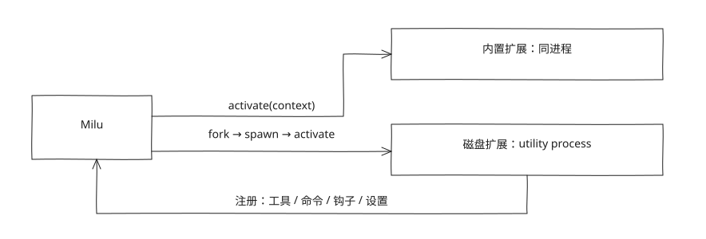

01 · 定义
扩展系统是什么
扩展系统里，VS Code 那套最出名。
它的界面和扩展在两个进程里：编辑器界面跑在渲染进程（workbench），扩展跑在 extension host。
- 扩展把 extension host 拖垮，窗口和编辑器还在，重启就能接着用。
- 扩展读大文件、建索引，堵的是宿主的线程，界面不跟着卡。
两侧靠一条 RPC 通道说话。扩展拿到的 vscode 模块是这条通道的客户端，调用先落到 workbench，再由 workbench
决定哪些转给主进程；文件读写、窗口控制最后发生在主进程那一侧，扩展碰不到。
按这套设计，vscode 给的 API 是收着的：稳定的才允许发布，实验性的只能本地调试。管住扩展的是另外三样东西：进程分隔、API 契约、workspace trust。
02 · 设计
怎么设计
设计插件系统，第一步是把应用的生命周期划清楚：
Starting：启动。注册服务、初始化容器、准备扩展环境。Restored：恢复。先把上次的对话读回来，让用户看到之前的会话。Ready：就绪。进程起来了、扩展激活完、工具和命令都注册好，从这里开始才能正常交互。Dispose：收场。销毁实例、释放资源、关掉子进程。
有了这条线，加载、激活、卸载才各有落点。
Starting、Restored、Ready、Dispose 四个阶段，以及加载与激活各自占的那一段。2.1 加载
加载发生在 Starting，做两件事：认出有哪些扩展，把它们登记到点位上。
Milu 的扩展分两类。内置的随应用发布，磁盘的由用户装在指定目录。发现就是扫这两类，收集基本信息：id、版本、部件、服务、窗口。
这些信息不参与运行，只决定后面怎么处理这个扩展。
登记把发现到的信息挂到 Milu 的点位上。点位和相关顺序是这样：
- 点位（Contribution Points）：扩展能挂东西的位置，类似插件系统的钩子或插槽，靠声明式配置扩展应用。
- 声明时机：容器初始化时把运行时点位一次声明完，等扩展加载和登记时，位置已经在了。
- 扩展登记：点位就绪后把信息挂上去，每条给一个 disposable，卸载时能精确摘掉。
这里有个约束：还在 Starting，一行扩展代码都没跑。点位只能靠声明式配置，没法依赖扩展运行时的行为。
所以点位的声明是静态的，得在扩展跑起来之前定死。这样在加载和登记阶段，Milu 手上就有一张完整的挂载点清单，处理贡献时不必回头问扩展。
2.2 激活
进 Restored 之后，Milu 逐个激活扩展。
每个扩展配一个 context。内置的直接调 activate(context)；磁盘的先 fork 一个子进程跑它的代码，把执行环境隔开，出问题也只到那一层。
fork 之前，Milu 先把通道搭好：消息接口和方法表。子进程起来之后，通过这条通道发激活请求，收回注册的工具、命令、钩子、设置。
两种扩展待遇不同，理由只有一个：内置是随应用发布的，按可信代码对待；磁盘来自外部，行为不确定，用子进程把风险隔开。

激活方式看的是扩展来源，不是它写了什么。
2.3 贡献点
贡献点（Contribution Points）是 Milu 提供的固定挂载点，扩展往这些位置塞条目，功能就长出来了。
粗分四类：菜单项、输入框两侧的部件、系统提示词、通用槽位。每一类有对应的点位，条目的形状也各不相同。
界面上能挂东西的位置都能这么接。扩展只往预定义的点位里塞条目，不改核心逻辑，所以功能可以一直加，核心不用跟着动。
贡献点不是运行时数据。Milu 拿到的是一条 { id, component, data, order }，component 或者
widget 只是个名字，它拿这个名字去注册表里找已经加载好的部件。
2.4 出错的时候
运行扩展系统，除了保证稳定，还要保证两件事：隔离性和可观测性。隔离决定一处坏会不会扩散，可观测性决定坏了以后能不能查。
隔离性只对磁盘扩展成立。每个磁盘扩展各占一个 utility process，彼此不相干，也和 Milu 分开；内置扩展和 Milu 同进程，不做隔离，因为它们是随应用一起发布的，按可信代码对待。这里换来的是稳定性和可控性，不是安全边界：子进程本身是完整的 Node，读写文件、起子进程都做得到，真正的限制在于它只能通过那几个能力动词跟 Milu 说话。
加载阶段先挡一层。Milu 校验扩展的元数据：apiVersion 必须是 1，部件类型、服务命名空间、窗口路径、id
是否重复也一并检查。校验不过就整条拒绝，原因写进失败列表；磁盘来源逐条拒绝，坏一个不耽误其余，内置来源直接抛出去，让构建问题在开发阶段就暴露。
激活阶段坏在代码里。activate 抛错、这台机器上根本没有可用的扩展宿主、两个扩展声明了同一个设置键，Milu
的处理都一样：捕获、记一条失败、把这个扩展整批卸掉，其余扩展继续激活。
运行阶段坏在进程和数据上。子进程退出（崩溃、被终止都算），Milu 先撤掉它这一轮注册的内容，再重试，最多三次，间隔 300ms
乘已试次数；三次都起不来，记一条失败并彻底卸载，工具表和命令表里不残留它的东西。跨边界的数据也有兜底：返回值过不了
structuredClone 会在回复发出前被拦下；服务没声明、方法不在方法表里、拥有者没在跑，三种情况各有明确报错。界面这一侧，部件抛错由外层错误边界渲染一行「扩展
id failed: 原因」，贡献字段求值抛错只丢那一条，静态资源跳出扩展根目录直接 404。
可观测性目前只有两样东西，但够查：extensions.status() 给出每个扩展的 id、来源、apiVersion 和它实现了哪些服务；失败列表给出 ref
和错误原文，两者都在设置里看得到。没有的是耗时和运行指标，现在也没有激活超时：子进程起得来、activate 一直不返回，Milu 会一直等下去，Ready
也就不落定。这是眼下明确的缺口。
Notes · 03 · Extensions ← Notes · 02 · Compact · 返回 Milu